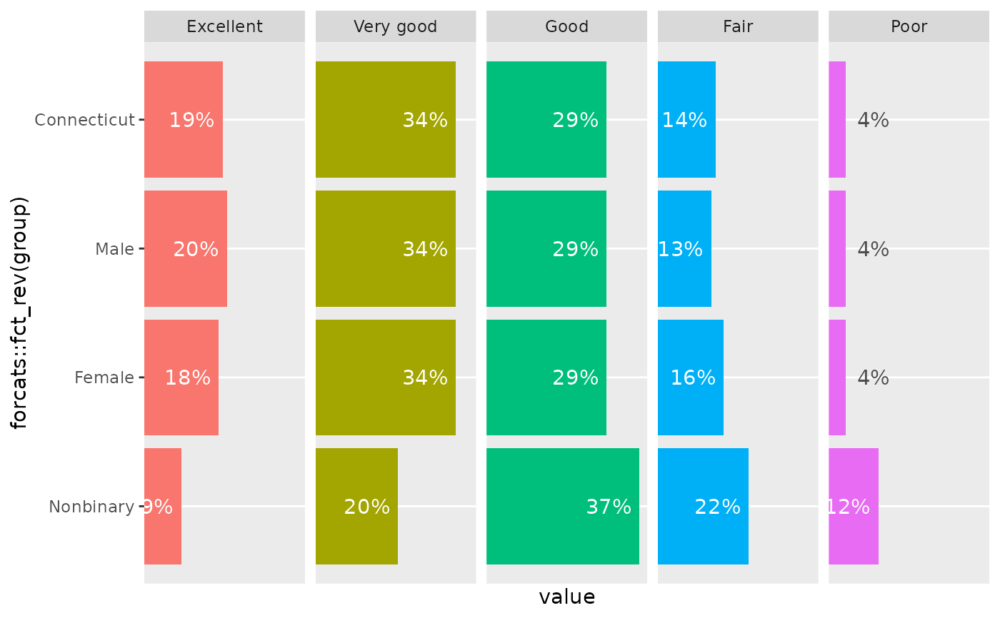

Sometimes when you add direct labels to a bar chart, it can be annoying to hard-code a value by which to offset the labels to add some padding before the end of the bar, e.g. using nudge_y. It's also a problem when you have different scales on different facets, or when batch generating charts where you don't know exactly what the scale will be for all of them.
ratio_to_max finds the maximum value in a vector, and returns some fraction of it that you specify. offset_lbls adds columns to your data with parameters for adjusting labels, and uses ratio_to_max under the hood. Values are offset proportionate to the maximum value in the dataset. It also handles situations where some bars are too small to fit labels properly inside the bar.
Usage
offset_lbls(
data,
value,
frac = 0.05,
thresh = 0.15,
margin = 1.5,
fun = NULL,
na = "N/A"
)
ratio_to_max(x, frac = 0.05)Arguments
- data
A data frame
- value
Bare name of the column to use
- frac
Numeric, the desired fraction of the maximum value by which to offset. Default: 0.05
- thresh
Numeric threshold for the ratio at which values will be considered too small to fit inside bars. Default: 0.15
- margin
Numeric scaling factor for positioning small values above / to the right of bars. Default: 1.5
- fun
A function, used to create value labels.
scales::label_*functions will be very useful here. IfNULL(the default), no formatting is done.- na
A string to use to replace
NAvalues. Default:"N/A". IfNULL, will print as"NA".- x
A numeric vector
Value
For ratio_to_max, a single number giving frac * max(x). For offset_lbls, a data frame with the same number of rows as data and an additional 5 columns.
Details
offset_lbls makes some decisions about how you might want to place labels but tries not to force those choices on you. The first thing calculated is a baseline offset, from ratio_to_max. For each value, there's a ratio to the maximum value. If that ratio is less than thresh, the value is considered "small". For non-small values, a y position is calculated by subtracting the baseline offset from the value; for small values, the y position is the value plus the baseline times the margin. Additionally, you can set text justifications differently for small and non-small values to set the alignment of labels above or below the bar.
It's good to mess around with frac and thresh to suit your chart. I find that horizontal bars might need smaller values of frac and/or larger values of thresh.
The columns in the returned data frame are:
is_small: Logical: is this value considered small with respect to the maximum value and your threshold. This is useful if you have white labels inside your bars, but need black or gray text for labels that fall outside the bars.off: Numeric: the number by which y-positions are offset, positive for small values and negative for non-small valuesy: Numeric: y-positions at which to place labels.NAvalues are replaced with 0.just: Numeric, either 0 or 1 to use as horizontal or vertical justification in e.g.ggplot2::geom_text.lbl: Character: values as formatted by the function infun, withNAvalues replaced per thenaargument.
Examples
library(ggplot2)
chronic_disease |>
dplyr::filter(question == "diabetes", category == "Age") |>
offset_lbls(value, fun = percent100) |>
ggplot(aes(x = group, y = value)) +
geom_col() +
geom_text(aes(y = y, label = lbl, color = is_small, vjust = just), show.legend = FALSE) +
scale_color_manual(values = c("TRUE" = "gray30", "FALSE" = "white"))
